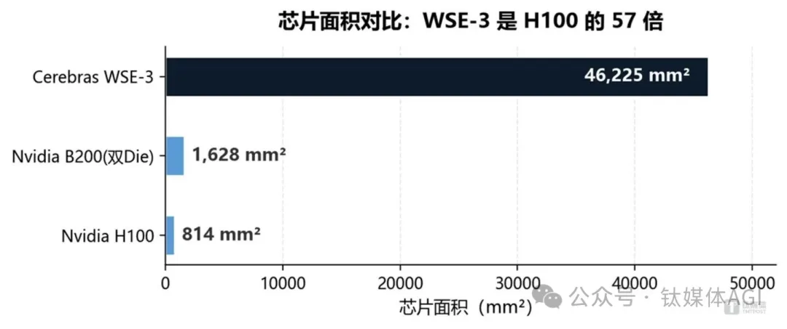
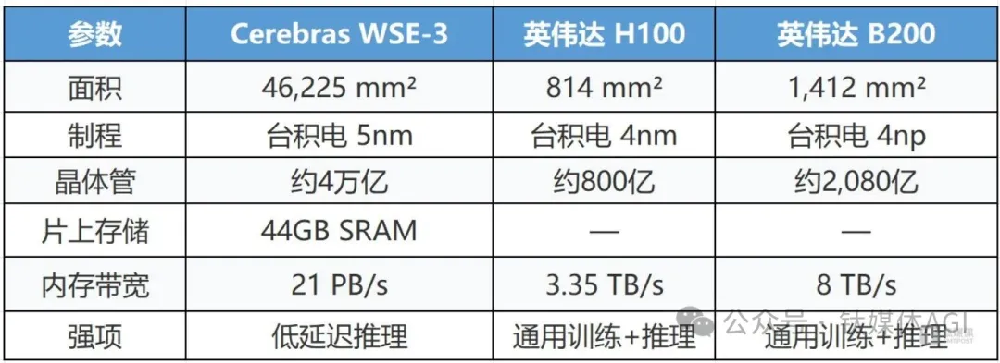
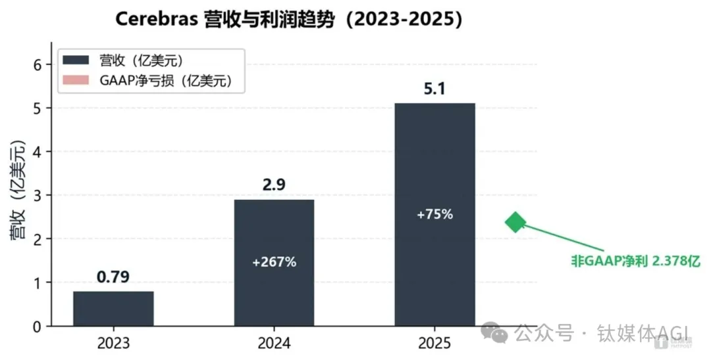
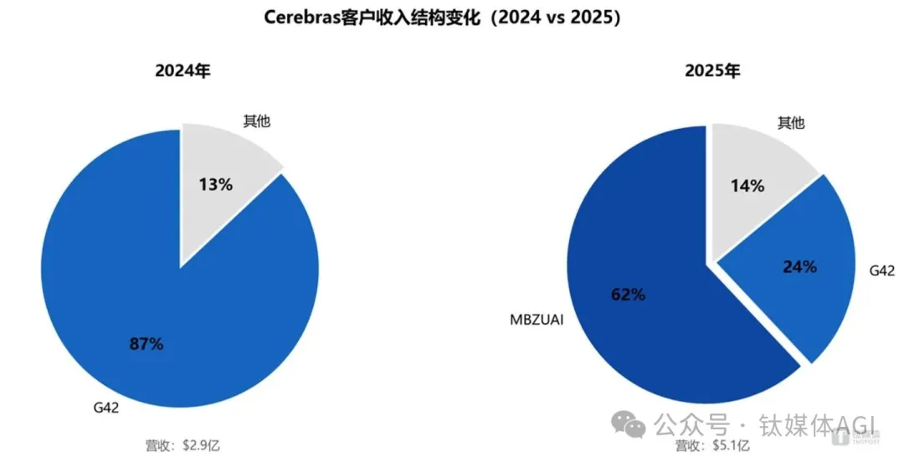
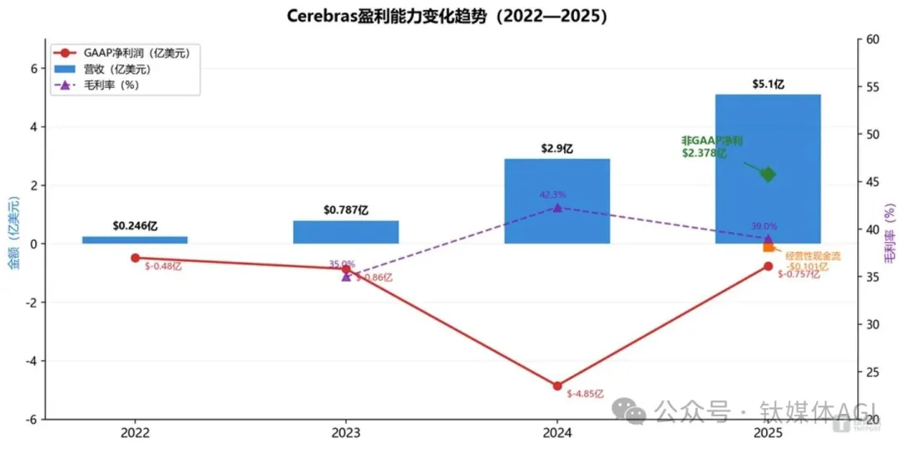
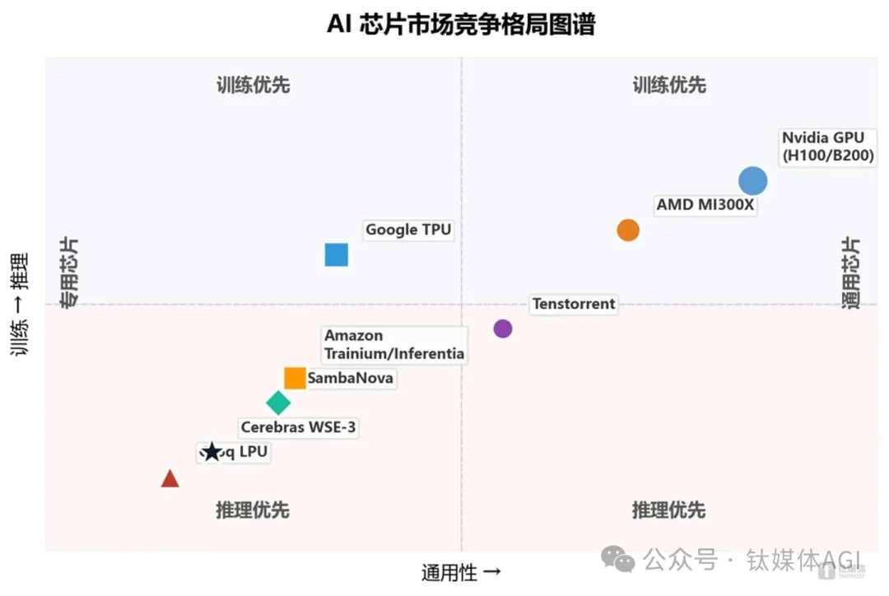
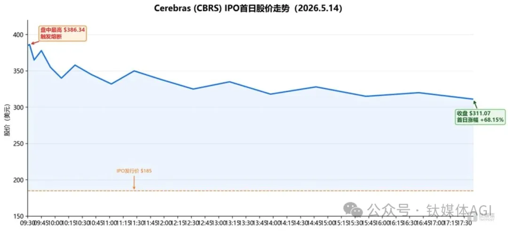
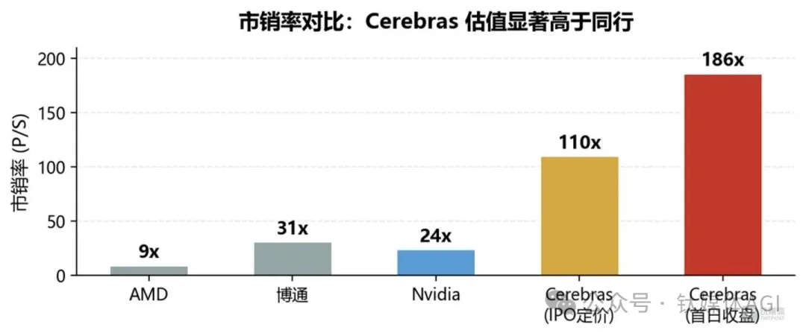

📈 一夜千亿，反杀英伟达！这家AI芯片公司凭什么炸翻美股？
Cerebras Deep Dive: The $100B IPO That Shook Nvidia

作者author[ˈɔːθər] n. 作者｜硅谷Tech news
Cerebras 的纳斯达克上市大戏刚刚落幕，但其引发的连锁反应仍在持续发酵ferment[fərˈment] v. 发酵；酝酿。
5 月 14 日上市首日，该股强势冲高surge[sɜːrdʒ] v. 冲高；猛涨，盘中全稀释市值一度冲破千亿美元关口（收盘约 670 亿美元），创下近年美股科技圈罕见的 IPO 盛况。如今行情逐步回归理性，大众也开始静下心来审视scrutinize[ˈskruːtənaɪz] v. 仔细审视这家特殊的算力企业。
谁也不曾想到，这家常年处于亏损状态、早年还因合规compliance[kəmˈplaɪəns] n. 合规；遵从问题一度叫停上市的企业，能在资本市场迎来如此亮眼的逆袭。纵观其发展历程，它既没有走主流GPU的研发路线，也没能在大模型训练赛道站稳脚跟，却靠着独特的晶圆级芯片技术，拿下OpenAI百亿级重磅订单，顺利撬动leverage[ˈlevərɪdʒ] v. 撬动；利用资本市场信心，彻底搅动原本由英伟达牢牢把控的AI算力市场格局。
褪去狂热的资本滤镜filter[ˈfɪltər] n. 滤镜；过滤器，诸多现实问题也随之浮出水面。
一边是爆发式增长的营收revenue[ˈrevənjuː] n. 营收；收入、巨额积压订单与全新技术路线带来的行业想象空间，另一边是居高不下的估值、客户集中隐患、盈利根基不稳等现实难题。抛开上市首日的行情喧嚣，Cerebras究竟是能真正撼动行业格局landscape[ˈlændskeɪp] n. 格局；局面的硬核黑马，还是一场被热度推高的资本泡沫？
答案无关一家公司，而是「AI推理inference[ˈɪnfərəns] n. 推理赛道迎来首个公开市场定价锚」——200亿美元OpenAI合同、晶圆级芯片的架构突破、英伟达垄断裂缝的首次资本化定价，三股力量交汇，将这家成立十年的创企推上了历史坐标。英伟达的垄断monopoly[məˈnɑːpəli] n. 垄断壁垒，正被撕开一道裂缝。
1. Cerebras的IPO不是一家公司上市的故事，而是AI推理赛道获得公开市场定价的里程碑milestone[ˈmaɪlstoʊn] n. 里程碑事件。
2. 客户结构从G42一家独大转向OpenAI + AWS多元diverse[daɪˈvɜːrs] adj. 多元的；多样化的格局，是其IPO翻盘的关键叙事转变。
3. WSE-3晶圆级芯片在推理场景的性能优势真实存在，但生态ecosystem[ˈiːkoʊsɪstəm] n. 生态系统护城河与供应链风险同样不容忽视。
4. 200亿美元OpenAI合同重塑了「客户即股东shareholder[ˈʃerhoʊldər] n. 股东」的商业模式，对OpenAI自身估值和上市进程产生复杂的双向影响。
5. AI芯片行业正式进入「推理细分时代」——巨头垄断格局正被缝隙niche[niːʃ] n. 缝隙市场；利基创新者撕裂。
从撤回withdrawal[wɪðˈdrɔːəl] n. 撤回；撤销到重启：一场合规破局
Cerebras的上市之路远非一帆风顺smoothly[ˈsmuːðli] adv. 顺利地。2024年首次递交S-1文件后，因最大客户G42（阿联酋人工智能公司）贡献超85%收入，且阿联酋主权资本间接持有hold[hoʊld] v. 持有美国AI基础设施股权，触发CFIUS（美国外资投资委员会）国家安全审查，于2025年10月撤回申请。
G42曾与华为和中国基因测序公司BGI集团有过业务往来——在AI芯片这一地缘政治敏感领域，「单一客户依赖reliance[rɪˈlaɪəns] n. 依赖；依靠 + 中东资本」的组合几乎必然触发审查。
2025年3月31日，CFIUS正式放行approve[əˈpruːv] v. 批准放行：G42将持股转换为非投票权股份，并签署美国国家安全协议。合规扫清了上市最大障碍obstacle[ˈɑːbstəkl] n. 障碍。
此后，Cerebras加速accelerate[əkˈseləreɪt] v. 加速客户多元化：OpenAI于2026年1月签署超200亿美元推理算力合同，AWS于同年3月宣布战略合作。客户结构的根本性改善与合规承诺的落地，共同为重新上市铺平pave[peɪv] v. 铺平了道路。
2026年2月，Cerebras完成10亿美元Series H轮融资funding[ˈfʌndɪŋ] n. 融资；资金，Tiger Global领投，AMD和Fidelity跟投，投后估值约230亿美元。4月17日重新递交S-1，定价区间range[reɪndʒ] n. 区间；范围从115—125美元「10天内三次上调」至最终185美元，IPO超额认购倍数超20倍，映射出市场需求的异常强劲。5月14日正式挂牌list[lɪst] v. 挂牌上市，募资55.5亿美元，创下2019年Uber以来美国科技公司最大规模IPO。
上市窗口window[ˈwɪndoʊ] n. 窗口期同样关键。市场窗口：美联储降息预期升温，美股IPO市场经历近三年低迷后回暖rebound[rɪˈbaʊnd] n. 回暖；反弹。叙事narrative[ˈnærətɪv] n. 叙事红利：DeepSeek事件引发全球对AI推理效率的再思考。竞品真空vacuum[ˈvækjuːm] n. 真空；空白：AI推理赛道尚无其他纯芯片上市公司，Groq融资75亿美元但未启动IPO，SambaNova在探索出售而非上市。Cerebras享受了推理芯片第一股的稀缺溢价premium[ˈpriːmiəm] n. 溢价。
这一经历具有行业示范意义——想要在美国资本市场获得认可，不仅需要技术领先和财务增长，还需要在客户结构和资本来源上满足监管regulatory[ˈreɡjələtɔːri] adj. 监管的合规要求。
晶圆级芯片：推理场景的结构性structural[ˈstrʌktʃərəl] adj. 结构性的优势
Cerebras成立于2015年，创始人founder[ˈfaʊndər] n. 创始人Andrew Feldman和Sean Lie此前创办的服务器公司被AMD收购。再度创业的核心理念极为激进radical[ˈrædɪkl] adj. 激进的：GPU本质上不适合深度学习，应从零设计AI专用芯片。Benchmark累计cumulative[ˈkjuːmjəleɪtɪv] adj. 累计的投入约2.7亿美元持有IPO前9.5%股权，按首日收盘价计算价值超40亿美元，回报超15倍。
理解Cerebras，必须理解「晶圆级」wafer[ˈweɪfər] n. 晶圆三个字。传统芯片制造将一片300毫米硅晶圆切割slice[slaɪs] v. 切割成数百颗独立Die，分别封装。Cerebras反其道而行——「不切割，直接将整片晶圆封装package[ˈpækɪdʒ] v. 封装为单颗芯片」，即WSE（Wafer-Scale Engine，晶圆级引擎）。工程难度极高，Cerebras通过预留约10%备用核心规避缺陷defect[ˈdiːfekt] n. 缺陷风险，历经多次流片失败，到第三代WSE-3才实现量产级可靠性。
WSE-3的核心优势在于消除了GPU集群中最大的性能瓶颈bottleneck[ˈbɑːtlnek] n. 瓶颈——「内存墙」。GPU的运算单元与显存（HBM，高带宽显存）物理分离separate[ˈsepəreɪt] v. 分离，数据搬运消耗大量时间和能耗。WSE-3将44GB片上SRAM直接集成integrate[ˈɪntɪɡreɪt] v. 集成，模型权重可完整载入，推理时无需频繁读写外部存储。

图1：WSE-3与英伟达H100/B200芯片面积对比comparison[kəmˈpærɪsn] n. 对比（数据来源：Cerebras S-1，Nvidia官网）

WSE-3与英伟达主力芯片关键参数parameter[pəˈræmɪtər] n. 参数对比
据Cerebras在特定测试环境下的公开数据，WSE-3可实现约50ms的超低响应时间，而GPU方案约为800ms——延迟latency[ˈleɪtənsi] n. 延迟差距达16倍；推理吞吐量throughput[ˈθruːpʊt] n. 吞吐量约1,200至2,000 tokens/秒，约为单张H100（100至150 tokens/秒）的10至15倍。与AWS合作的Trainium3 + CS-3组合combination[ˌkɑːmbɪˈneɪʃn] n. 组合，预计可实现5倍的token吞吐量提升。
但WSE-3并非万能panacea[ˌpænəˈsiːə] n. 万能方案方案。作为单片架构，它「无法通过NVLink（英伟达高速互连技术）扩展expand[ɪkˈspænd] v. 扩展到千卡集群」，在分布式训练场景中完全无法与英伟达GPU集群竞争。Cerebras的定位positioning[pəˈzɪʃənɪŋ] n. 定位严格限定在推理这一细分场景。
Cerebras与英伟达的关系，更接近当年SSD对HDD的冲击impact[ˈɪmpækt] n. 冲击——SSD并未取代HDD，但在关键性能场景中逐步蚕食市场份额。正如Atlas Peak Research在其分析报告中所指出的：「Cerebras不是英伟达的全面替代者substitute[ˈsʌbstɪtuːt] n. 替代者，而是在延迟敏感型推理这一经济意义重大的细分市场，拥有可信的架构优势。」
WSE-3在推理场景的结构性优势，开始转化convert[kənˈvɜːrt] v. 转化为真实的商业成果。
财报拆解unpack[ʌnˈpæk] v. 拆解；剖析：增长之下，风险暗涌
从2022年的2460万美元到2025年的5.1亿美元，Cerebras的营收增长曲线陡峭steep[stiːp] adj. 陡峭的。2024年跃升jump[dʒʌmp] v. 跃升至2.9亿美元（同比+268%），但净亏损高达4.816亿美元。2025年的变化是根本性的：「GAAP口径净利润首次转正，达2.378亿美元」，实现扭亏为盈profitable[ˈprɑːfɪtəbl] adj. 盈利的；非GAAP净亏损为7,570万美元（剔除exclude[ɪkˈskluːd] v. 剔除；排除一次性项目影响）。积压backlog[ˈbæklɔːɡ] n. 积压订单订单高达246亿美元，其中OpenAI合同超200亿美元。

图2：Cerebras 2022—2025年营收与利润趋势trend[trend] n. 趋势（数据来源：Cerebras S-1/A招股书）
但营收增长的光环halo[ˈheɪloʊ] n. 光环之下，风险同样清晰——而且可能被低估。
客户集中度concentration[ˌkɑːnsnˈtreɪʃn] n. 集中度风险：2025年前两大客户MBZUAI（62%）和G42（24%）合计贡献86%营收，非关联方独立收入仅占14%。OpenAI的200亿美元合同尚未贡献实质收入，其执行execute[ˈeksɪkjuːt] v. 执行进度直接决定未来三年营收走势。

图3：Cerebras客户收入结构structure[ˈstrʌktʃər] n. 结构变化（2024 vs 2025，数据来源：Cerebras S-1。注：OpenAI合同截至2025年尚未贡献实质substantial[səbˈstænʃl] adj. 实质性的收入）
毛利率margin[ˈmɑːrdʒɪn] n. 毛利率持续下滑：从2024年的42.3%降至2025年的39.0%。主因为大客户数量折扣discount[ˈdɪskaʊnt] n. 折扣增加，以及晶圆级芯片封装测试的高成本。对于一家需要持续投入基础设施的公司而言，毛利率若不能止跌回升，盈利可持续性sustainability[səˌsteɪnəˈbɪləti] n. 可持续性将面临考验。

图4：Cerebras盈利能力profitability[ˌprɑːfɪtəˈbɪləti] n. 盈利能力变化趋势
（数据来源source[sɔːrs] n. 来源：Cerebras S-1/A招股书）
造血能力尚未验证verify[ˈverɪfaɪ] v. 验证：2025年经营性现金流约-1,010万美元，虽然GAAP口径已实现盈利，但大规模基础设施资本支出仍在拖累实际造血能力。
更值得关注的是股权equity[ˈekwəti] n. 股权结构。Cerebras设计了A、B、N三类股权，创始人通过双重dual[ˈduːəl] adj. 双重的股权结构维持控制权。OpenAI持有3,340万股认股权证warrant[ˈwɔːrənt] n. 认股权证（行权价仅0.00001美元），若2吉瓦部署门槛达标将持股约10%，同时提供10亿美元营运资金贷款（年利率6%）。这种「客户 + 股东 + 贷款方」三重身份叠加的模式，既是深度绑定，也构成治理governance[ˈɡʌvərnəns] n. 治理风险。
作为参照benchmark[ˈbentʃmɑːrk] n. 参照基准，同样专注推理芯片的Groq尚未盈利，市销率约30倍。反衬之下，Cerebras 186倍市销率multiple[ˈmʌltɪpl] n. 市销率倍数的定价是否合理，更值得冷静审视。
OpenAI赌局gamble[ˈɡæmbl] n. 赌博；赌局：双向绑定的连锁效应
Cerebras招股书中最引人注目striking[ˈstraɪkɪŋ] adj. 引人注目的的数字，不是55.5亿美元募资额，而是那份超200亿美元的OpenAI采购合同。2026年1月签署，分阶段部署deploy[dɪˈplɔɪ] v. 部署至2028年，为OpenAI提供总计750兆瓦低延迟AI推理算力，可选扩展至2030年1.25吉瓦——全球迄今最大规模的AI推理部署项目。
合作背后的「三重绑定binding[ˈbaɪndɪŋ] n. 绑定；捆绑」结构值得细读：「商业合同」使OpenAI成为Cerebras最大收入来源；「股权纽带」通过3,340万股认股权证将二者利益深度挂钩link[lɪŋk] v. 挂钩；关联；「债务关系」以10亿美元贷款和部署里程碑挂钩，形成财务杠杆lever[ˈlevər] n. 杠杆。三重绑定意味着，这已不是一笔普通采购，而是一场命运共同体式的豪赌wager[ˈweɪdʒər] n. 赌注；豪赌。
对OpenAI而言，战略逻辑清晰：降低对英伟达GPU的单一依赖，增强供应链议价bargain[ˈbɑːrɡən] v. 议价；讨价还价能力，同时显著降低推理成本以改善毛利率。更重要的是，Cerebras上市后认股权证价值水涨船高——按首日收盘价311美元计算，账面浮盈appreciation[əˌpriːʃiˈeɪʃn] n. 账面浮盈；增值已超100亿美元。
但风险是双向reciprocal[rɪˈsɪprəkl] adj. 双向的；相互的的。对Cerebras而言，「若OpenAI后续自研推理芯片，或合同执行不及预期，将面临最大客户流失churn[tʃɜːrn] n. 客户流失的系统性危机」——一个贡献未来数年绝大部分收入的客户，同时也是命运共同体，这种深度绑定既是护城河也是枷锁。对OpenAI而言，200亿美元合同对利润表和现金流构成长期压力pressure[ˈpreʃər] n. 压力；当OpenAI自身启动IPO时，客户、股东、贷款方三重身份叠加，投资者必然审视是否存在利益输送transfer[trænsˈfɜːr] n. 输送；转移风险，这将直接影响其估值模型。
OpenAI选择Cerebras，释放了一个明确信号signal[ˈsɪɡnəl] n. 信号：AI行业的核心竞争力正从「谁能训练出最大模型」转向「谁能以最低成本、最快速度提供推理服务」。推理不再是训练的附庸appendage[əˈpendɪdʒ] n. 附庸；附属物，而是独立的价值创造环节。Grand View Research估计estimate[ˈestɪmeɪt] v. 估计，全球AI推理市场将从2024年约970亿美元增长至2030年约2,540亿美元（CAGR 17.5%）；MarketsandMarkets的预测forecast[ˈfɔːrkæst] n. 预测显示，到2030年市场可达约2,550亿美元。两个独立来源指向同一趋势：推理经济正在崛起rise[raɪz] n. 崛起。
英伟达的裂缝crack[kræk] n. 裂缝与多极化竞争
Cerebras不是英伟达的终结者terminator[ˈtɜːrmɪneɪtər] n. 终结者，而是细分赛道的颠覆者。
短期来看，影响有限limited[ˈlɪmɪtɪd] adj. 有限的。英伟达市值超5万亿美元（2026年5月盘中突破5.5万亿美元），数据中心GPU市场份额share[ʃer] n. 份额超80%。更何况英伟达已于2025年底以约200亿美元收购acquire[əˈkwaɪər] v. 收购Groq，在推理赛道完成「GPU + LPU（语言处理单元）」双线布局。「CUDA生态」拥有全球数百万AI开发者，迁移migrate[ˈmaɪɡreɪt] v. 迁移成本极高；NVLink和InfiniBand互连interconnect[ˌɪntərkəˈnekt] v. 互连方案从8卡到万卡形成完整生态；Blackwell B200架构architecture[ˈɑːrkɪtektʃər] n. 架构正在快速缩小推理性能差距。
但中长期影响值得重视noteworthy[ˈnoʊtwɜːrði] adj. 值得关注的。Cerebras上市验证了一个命题thesis[ˈθiːsɪs] n. 命题；论点：非英伟达架构也能在AI芯片市场获得商业成功和资本认可。推理市场正从GPU主导的单一格局，向GPU、ASIC（专用芯片）、晶圆级芯片等多架构并存的方向演化evolve[iˈvɑːlv] v. 演化；进化。行业研究数据显示，预计2026年云服务商定制ASIC出货量增长约45%，增速growth[ɡroʊθ] n. 增速；增长显著高于GPU的约16%。
更值得警惕vigilant[ˈvɪdʒɪlənt] adj. 警惕的的是英伟达的下一步。「Rubin架构预计2027年量产volume[ˈvɑːljuːm] n. 量产，主打推理场景，性能可能超越WSE-3。」一旦英伟达将推理性能差距压缩compress[kəmˈpres] v. 压缩到临界点以下，Cerebras的架构优势空间将被大幅压缩。

图5：AI芯片市场竞争格局图谱matrix[ˈmeɪtrɪks] n. 图谱；矩阵
更广阔的版图还包括：Google TPU已迭代iterate[ˈɪtəreɪt] v. 迭代至第八代（2026年4月发布TPU 8t/8i），Anthropic于2025年10月签署协议计划部署百万颗前代Ironwood TPU芯片；Amazon已部署超50万颗Trainium2芯片chip[tʃɪp] n. 芯片；Tenstorrent由传奇legend[ˈledʒənd] n. 传奇芯片架构师Jim Keller领导，走RISC-V开放路线。超大规模云厂商「自研 + 外采」双轨策略已得到验证——AWS与Cerebras的合作模式可能被其他云厂商复制replicate[ˈreplɪkeɪt] v. 复制。整个行业正走向「多供应商、多架构、多场景」的多元化diversification[daɪˌvɜːrsɪfɪˈkeɪʃn] n. 多元化生态。
推理市场「一超多强」的格局已成定局settle[ˈsetl] v. 确定；定局。英伟达短期难撼动，但其在每个细分领域都将面临「最优解」竞争者的蚕食erode[ɪˈroʊd] v. 蚕食；侵蚀。
186倍市销率：信仰faith[feɪθ] n. 信仰还是泡沫？
按2025年营收5.1亿美元计算，Cerebras首日收盘后close[kloʊz] n. 收盘市销率（P/S）达186倍。这一数字figure[ˈfɪɡjər] n. 数字是英伟达（约24倍）的7.8倍，博通（约31倍）的6倍，AMD（约9倍）的20倍。按IPO定价price[praɪs] n. 定价185美元计算，市销率约110倍。

图6：Cerebras IPO首日debut[deɪˈbjuː] n. 首日；首次亮相（2026.5.14）股价走势
数据来源origin[ˈɔːrɪdʒɪn] n. 来源；出处：NASDAQ，CNBC

图7：Cerebras与主要芯片公司市销率对比（数据来源：各公司财报及IPO文件filing[ˈfaɪlɪŋ] n. 文件；备案，截至2026.5.14）
如此悬殊disparity[dɪˈspærəti] n. 悬殊；差异的估值差异，需要对两个方向做压力测试。
乐观optimistic[ˌɑːptɪˈmɪstɪk] adj. 乐观的情景下：OpenAI合同如期执行，推理部署顺利推进，2028年前收入CAGR维持50%以上；AWS合作转化为实质收入，形成三大客户client[ˈklaɪənt] n. 客户支柱；毛利率随良率yield[jiːld] n. 良率；产出率提升恢复至45%以上，经营性现金流转正；Cerebras持续享受「推理基础设施第一股」的稀缺scarcity[ˈskersəti] n. 稀缺溢价。
悲观pessimistic[ˌpesɪˈmɪstɪk] adj. 悲观的情景下，风险更为严峻——
合同执行风险：OpenAI合同金额巨大但收入确认节奏pace[peɪs] n. 节奏；进度取决于部署里程碑，存在时间错配风险。若OpenAI后续自研推理芯片或转向switch[swɪtʃ] v. 转向；切换其他供应商，Cerebras将面临最大客户流失的系统性危机。
技术替代风险：英伟达Rubin架构（预计2027年量产）主打推理场景，可能进一步压缩专用推理芯片的性能performance[pərˈfɔːrməns] n. 性能优势空间。
需求不及预期：若大语言模型应用落地不及预期，推理需求增速放缓slowdown[ˈsloʊdaʊn] n. 放缓；减速，186倍市销率将成为空中楼阁。
治理争议：三类股权结构和大量认股权证稀释可能引发机构投资者回避avoid[əˈvɔɪd] v. 回避。
对投资者而言，有几个关键监控指标值得持续跟踪track[træk] v. 跟踪；追踪：OpenAI算力部署里程碑进度及收入确认节奏、季度毛利率能否止跌回升、独立客户收入占比变化、经营性现金流拐点何时出现，以及英伟达Rubin芯片的推理性能发布数据。首日68%的涨幅rally[ˈræli] n. 涨幅；反弹固然令人瞩目，但真正的考验在第一个财报季。
Cerebras的千亿市值，不是一家公司的胜利，而是AI算力从「训练为王」到「推理制胜」的时代宣言manifesto[ˌmænɪˈfestoʊ] n. 宣言。这家公司用十年时间证明了一件事：在GPU统治一切的格局中，缝隙创新者仍能找到结构性的生存survive[sərˈvaɪv] v. 生存空间。
但资本狂欢终需业绩兑现deliver[dɪˈlɪvər] v. 兑现；交付。186倍市销率的信仰，终将被季度财报的硬数据检验test[test] v. 检验。当一家公司的积压订单中超80%来自两个关联affiliate[əˈfɪlieɪt] v. 关联客户时，所有的乐观叙事都需要用合同执行、毛利率修复和现金流拐点来回答。
Cerebras上市只是AI芯片多极化竞争的序幕prologue[ˈproʊlɔːɡ] n. 序幕。接下来的12个月，Groq、Tenstorrent、SambaNova是否跟进follow[ˈfɑːloʊ] v. 跟进上市？超大规模云厂商自研芯片将走到哪一步progress[ˈprɑːɡres] n. 进展？英伟达Rubin架构能否进一步压缩专用推理芯片的生存空间room[ruːm] n. 空间；余地？AI应用落地能否支撑推理算力的指数级exponential[ˌekspəˈnenʃl] adj. 指数级的增长？这些问题的答案，将决定AI算力格局的最终走向direction[dəˈrekʃn] n. 方向；走向。
推理时代的大幕，已然拉开unfold[ʌnˈfoʊld] v. 拉开；展开。（本文首发publish[ˈpʌblɪʃ] v. 首发；发布钛媒体APP）